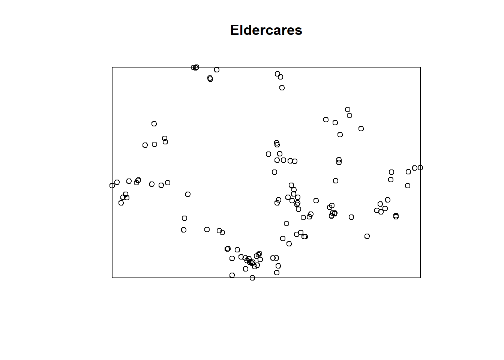

pacman::p_load(readr, sf, tmap, spatstat, sfdep, tidyverse, maptools)R Packages
Import Data
Aspatial Data
General Practitioner Clinics
gp_data <- read_csv("data/aspatial/gp_data_geocoded.csv")[,-1]Rows: 1221 Columns: 7
── Column specification ────────────────────────────────────────────────────────
Delimiter: ","
chr (2): clinic, postal_code
dbl (5): index, X, Y, Lat, Long
ℹ Use `spec()` to retrieve the full column specification for this data.
ℹ Specify the column types or set `show_col_types = FALSE` to quiet this message.head(gp_data, 5)# A tibble: 5 × 6
clinic postal_code X Y Lat Long
<chr> <chr> <dbl> <dbl> <dbl> <dbl>
1 RafflesMedical 159953 24849. 30114. 1.29 104.
2 Shenton Medical Group 119963 24433. 28496. 1.27 104.
3 Town Hall Clinic 119967 24375. 28917. 1.28 104.
4 Chuah Clinic & Surgery 380113 33881. 33643. 1.32 104.
5 ECM Clinic & Surgery 387604 33518. 33021. 1.31 104.Hospitals
hospital_data <- read_csv("data/aspatial/hospital_data_geocoded.csv")Rows: 27 Columns: 11
── Column specification ────────────────────────────────────────────────────────
Delimiter: ","
chr (6): HOSPITAL_NAME, PRIVATE, TYPE, MANAGED_BY, ADDRESS, NUM_OF_BEDS
dbl (5): POSTAL_CODE, X, Y, Lat, Long
ℹ Use `spec()` to retrieve the full column specification for this data.
ℹ Specify the column types or set `show_col_types = FALSE` to quiet this message.head(hospital_data, 5)# A tibble: 5 × 11
HOSPITAL_N…¹ PRIVATE TYPE MANAG…² ADDRESS POSTA…³ NUM_O…⁴ X Y Lat
<chr> <chr> <chr> <chr> <chr> <dbl> <chr> <dbl> <dbl> <dbl>
1 ALEXANDRA H… Y GENE… <NA> ALEXAN… 159964 176 24230. 30060. 1.29
2 BRIGHT VISI… N COMM… SINGHE… 5 LORO… 547530 317 32976. 39338. 1.37
3 CHANGI GENE… N GENE… SINGHE… 2 SIME… 529889 1,000 40784. 35942. 1.34
4 CONCORD INT… Y SPEC… <NA> 19 Ada… 289891 34 25774. 34337. 1.33
5 FARRER PARK… Y GENE… <NA> 1 Farr… 217562 121 30284. 32783. 1.31
# … with 1 more variable: Long <dbl>, and abbreviated variable names
# ¹HOSPITAL_NAME, ²MANAGED_BY, ³POSTAL_CODE, ⁴NUM_OF_BEDSPolyclinics
poly_data <- read_csv("data/aspatial/polyclinic_data_geocoded.csv")Rows: 20 Columns: 8
── Column specification ────────────────────────────────────────────────────────
Delimiter: ","
chr (3): POLYCLINIC, MANAGED_BY, ADDRESS
dbl (5): POSTAL_CODE, X, Y, Lat, Long
ℹ Use `spec()` to retrieve the full column specification for this data.
ℹ Specify the column types or set `show_col_types = FALSE` to quiet this message.head(poly_data, 5)# A tibble: 5 × 8
POLYCLINIC MANAGED_BY ADDRESS POSTA…¹ X Y Lat Long
<chr> <chr> <chr> <dbl> <dbl> <dbl> <dbl> <dbl>
1 ANG MO KIO POLYCLINIC NHG 21 ANG … 569666 29375. 39591. 1.37 104.
2 BEDOK POLYCLINIC Singhealth HEARTBE… 469662 38997. 34344. 1.33 104.
3 BUKIT BATOK POLYCLINIC NUHS 50 BUKI… 659164 18485. 37125. 1.35 104.
4 BUKIT MERAH POLYCLINIC Singhealth 163 BUK… 150163 26192. 29566. 1.28 104.
5 CHOA CHU KANG POLYCLINIC NUHS 2 TECK … 688846 18814. 40478. 1.38 104.
# … with abbreviated variable name ¹POSTAL_CODENursing Homes
nursing_data <- read_csv("data/aspatial/nursing_home_data_geocoded.csv")Rows: 76 Columns: 7
── Column specification ────────────────────────────────────────────────────────
Delimiter: ","
chr (2): NURSING_HOME_NAME, ADDRESS
dbl (5): POSTAL_CODE, X, Y, Lat, Long
ℹ Use `spec()` to retrieve the full column specification for this data.
ℹ Specify the column types or set `show_col_types = FALSE` to quiet this message.head(nursing_data, 5)# A tibble: 5 × 7
NURSING_HOME_NAME ADDRESS POSTA…¹ X Y Lat Long
<chr> <chr> <dbl> <dbl> <dbl> <dbl> <dbl>
1 ALL SAINTS HOME (HOUGANG) 5 Poh Huat Ro… 546703 33636. 38608. 1.37 104.
2 ALL SAINTS HOME (JURONG EAST) 20 JURONG EAS… 609792 17702. 35990. 1.34 104.
3 ALL SAINTS HOME (TAMPINES) 11 TAMPINES S… 529123 41443. 38141. 1.36 104.
4 ALL SAINTS HOME (YISHUN) 551 YISHUN RI… 768681 27662. 46348. 1.44 104.
5 APEX HARMONY LODGE 10 PASIR RIS … 518240 42573. 39170. 1.37 104.
# … with abbreviated variable name ¹POSTAL_CODEResident Population by Planning Area/Subzone, Age Group and Sex
Only total population, not separated by genders
pop_data <- read_csv("data/aspatial/Resident Population 2015.csv", skip=11)[1:379,1:19]New names:
Rows: 401 Columns: 59
── Column specification
──────────────────────────────────────────────────────── Delimiter: "," chr
(58): ...1, Total...2, 0 - 4...3, 5 - 9...4, 10 - 14...5, 15 - 19...6, 2... lgl
(1): ...59
ℹ Use `spec()` to retrieve the full column specification for this data. ℹ
Specify the column types or set `show_col_types = FALSE` to quiet this message.
• `` -> `...1`
• `Total` -> `Total...2`
• `0 - 4` -> `0 - 4...3`
• `5 - 9` -> `5 - 9...4`
• `10 - 14` -> `10 - 14...5`
• `15 - 19` -> `15 - 19...6`
• `20 - 24` -> `20 - 24...7`
• `25 - 29` -> `25 - 29...8`
• `30 - 34` -> `30 - 34...9`
• `35 - 39` -> `35 - 39...10`
• `40 - 44` -> `40 - 44...11`
• `45 - 49` -> `45 - 49...12`
• `50 - 54` -> `50 - 54...13`
• `55 - 59` -> `55 - 59...14`
• `60 - 64` -> `60 - 64...15`
• `65 - 69` -> `65 - 69...16`
• `70 - 74` -> `70 - 74...17`
• `75 - 79` -> `75 - 79...18`
• `80 - 84` -> `80 - 84...19`
• `85 & Over` -> `85 & Over...20`
• `Total` -> `Total...21`
• `0 - 4` -> `0 - 4...22`
• `5 - 9` -> `5 - 9...23`
• `10 - 14` -> `10 - 14...24`
• `15 - 19` -> `15 - 19...25`
• `20 - 24` -> `20 - 24...26`
• `25 - 29` -> `25 - 29...27`
• `30 - 34` -> `30 - 34...28`
• `35 - 39` -> `35 - 39...29`
• `40 - 44` -> `40 - 44...30`
• `45 - 49` -> `45 - 49...31`
• `50 - 54` -> `50 - 54...32`
• `55 - 59` -> `55 - 59...33`
• `60 - 64` -> `60 - 64...34`
• `65 - 69` -> `65 - 69...35`
• `70 - 74` -> `70 - 74...36`
• `75 - 79` -> `75 - 79...37`
• `80 - 84` -> `80 - 84...38`
• `85 & Over` -> `85 & Over...39`
• `Total` -> `Total...40`
• `0 - 4` -> `0 - 4...41`
• `5 - 9` -> `5 - 9...42`
• `10 - 14` -> `10 - 14...43`
• `15 - 19` -> `15 - 19...44`
• `20 - 24` -> `20 - 24...45`
• `25 - 29` -> `25 - 29...46`
• `30 - 34` -> `30 - 34...47`
• `35 - 39` -> `35 - 39...48`
• `40 - 44` -> `40 - 44...49`
• `45 - 49` -> `45 - 49...50`
• `50 - 54` -> `50 - 54...51`
• `55 - 59` -> `55 - 59...52`
• `60 - 64` -> `60 - 64...53`
• `65 - 69` -> `65 - 69...54`
• `70 - 74` -> `70 - 74...55`
• `75 - 79` -> `75 - 79...56`
• `80 - 84` -> `80 - 84...57`
• `85 & Over` -> `85 & Over...58`
• `` -> `...59`head(pop_data, 5)# A tibble: 5 × 19
...1 Total…¹ 0 - 4…² 5 - 9…³ 10 - …⁴ 15 - …⁵ 20 - …⁶ 25 - …⁷ 30 - …⁸ 35 - …⁹
<chr> <chr> <chr> <chr> <chr> <chr> <chr> <chr> <chr> <chr>
1 Total 3902690 183580 204450 214390 242900 264130 271030 290620 301070
2 Ang M… 174770 6790 7660 8290 9320 10310 11170 12250 13070
3 Ang M… 5020 260 280 320 280 260 310 370 420
4 Cheng… 29770 1290 1180 1290 1400 1570 1830 2490 2490
5 Chong… 27900 910 1100 1180 1370 1520 1800 1980 2100
# … with 9 more variables: `40 - 44...11` <chr>, `45 - 49...12` <chr>,
# `50 - 54...13` <chr>, `55 - 59...14` <chr>, `60 - 64...15` <chr>,
# `65 - 69...16` <chr>, `70 - 74...17` <chr>, `75 - 79...18` <chr>,
# `80 - 84...19` <chr>, and abbreviated variable names ¹Total...2,
# ²`0 - 4...3`, ³`5 - 9...4`, ⁴`10 - 14...5`, ⁵`15 - 19...6`, ⁶`20 - 24...7`,
# ⁷`25 - 29...8`, ⁸`30 - 34...9`, ⁹`35 - 39...10`Geospatial Data
Master Plan Subzone 2019
mpsz <- st_read(dsn = "data/geospatial/MPSZ-2019",
layer = "MPSZ-2019") %>%
st_transform(crs = 3414)Reading layer `MPSZ-2019' from data source
`C:\deadline2359\IS415-Project\posts\data_cleaning\data\geospatial\MPSZ-2019'
using driver `ESRI Shapefile'
Simple feature collection with 332 features and 6 fields
Geometry type: MULTIPOLYGON
Dimension: XY
Bounding box: xmin: 103.6057 ymin: 1.158699 xmax: 104.0885 ymax: 1.470775
Geodetic CRS: WGS 84head(mpsz, 5)Simple feature collection with 5 features and 6 fields
Geometry type: MULTIPOLYGON
Dimension: XY
Bounding box: xmin: 8012.578 ymin: 22108.68 xmax: 33316.59 ymax: 31087.61
Projected CRS: SVY21 / Singapore TM
SUBZONE_N SUBZONE_C PLN_AREA_N PLN_AREA_C REGION_N
1 MARINA EAST MESZ01 MARINA EAST ME CENTRAL REGION
2 INSTITUTION HILL RVSZ05 RIVER VALLEY RV CENTRAL REGION
3 ROBERTSON QUAY SRSZ01 SINGAPORE RIVER SR CENTRAL REGION
4 JURONG ISLAND AND BUKOM WISZ01 WESTERN ISLANDS WI WEST REGION
5 FORT CANNING MUSZ02 MUSEUM MU CENTRAL REGION
REGION_C geometry
1 CR MULTIPOLYGON (((33222.98 29...
2 CR MULTIPOLYGON (((28481.45 30...
3 CR MULTIPOLYGON (((28087.34 30...
4 WR MULTIPOLYGON (((14557.7 304...
5 CR MULTIPOLYGON (((29542.53 31...Locations of Bus Stops
busstop_sf <- st_read(dsn = "data/geospatial/BusStop_Feb2023",
layer = "BusStop") %>%
st_transform(crs = 3414)Reading layer `BusStop' from data source
`C:\deadline2359\IS415-Project\posts\data_cleaning\data\geospatial\BusStop_Feb2023'
using driver `ESRI Shapefile'
Simple feature collection with 5159 features and 3 fields
Geometry type: POINT
Dimension: XY
Bounding box: xmin: 3970.122 ymin: 26482.1 xmax: 48284.56 ymax: 52983.82
Projected CRS: SVY21head(busstop_sf, 5)Simple feature collection with 5 features and 3 fields
Geometry type: POINT
Dimension: XY
Bounding box: xmin: 13228.59 ymin: 30391.85 xmax: 41603.76 ymax: 44206.38
Projected CRS: SVY21 / Singapore TM
BUS_STOP_N BUS_ROOF_N LOC_DESC geometry
1 22069 B06 OPP CEVA LOGISTICS POINT (13576.31 32883.65)
2 32071 B23 AFT TRACK 13 POINT (13228.59 44206.38)
3 44331 B01 BLK 239 POINT (21045.1 40242.08)
4 96081 B05 GRACE INDEPENDENT CH POINT (41603.76 35413.11)
5 11561 B05 BLK 166 POINT (24568.74 30391.85)Locations of Train Stations
trainstation_sf <- st_read(dsn = "data/geospatial/TrainStation_Feb2023",
layer = "RapidTransitSystemStation")[,c(-1, -2)] %>%
st_transform(crs = 3414)Reading layer `RapidTransitSystemStation' from data source
`C:\deadline2359\IS415-Project\posts\data_cleaning\data\geospatial\TrainStation_Feb2023'
using driver `ESRI Shapefile'Warning in CPL_read_ogr(dsn, layer, query, as.character(options), quiet, : GDAL
Message 1: Non closed ring detected. To avoid accepting it, set the
OGR_GEOMETRY_ACCEPT_UNCLOSED_RING configuration option to NOSimple feature collection with 220 features and 4 fields
Geometry type: POLYGON
Dimension: XY
Bounding box: xmin: 6068.209 ymin: 27478.44 xmax: 45377.5 ymax: 47913.58
Projected CRS: SVY21head(trainstation_sf, 5)Simple feature collection with 5 features and 2 fields
Geometry type: POLYGON
Dimension: XY
Bounding box: xmin: 29286.74 ymin: 30548.91 xmax: 34623.54 ymax: 33404.47
Projected CRS: SVY21 / Singapore TM
TYP_CD_DES STN_NAM_DE geometry
1 MRT ESPLANADE MRT STATION POLYGON ((30566.07 30621.21...
2 MRT PAYA LEBAR MRT STATION POLYGON ((34495.6 33384.44,...
3 MRT DHOBY GHAUT MRT STATION POLYGON ((29293.51 31312.53...
4 MRT DAKOTA MRT STATION POLYGON ((34055.08 32290.62...
5 MRT LAVENDER MRT STATION POLYGON ((31236.5 32085.76,...Data Preparation
Retrieve Geospatial Data
General Practitioner Clinics
gp_sf <- st_as_sf(gp_data, coords=c("Long", "Lat"), crs=4326) %>% st_transform(crs = 3414)head(gp_sf, 5)Simple feature collection with 5 features and 4 fields
Geometry type: POINT
Dimension: XY
Bounding box: xmin: 24374.75 ymin: 28496.49 xmax: 33880.65 ymax: 33642.63
Projected CRS: SVY21 / Singapore TM
# A tibble: 5 × 5
clinic postal_code X Y geometry
<chr> <chr> <dbl> <dbl> <POINT [m]>
1 RafflesMedical 159953 24849. 30114. (24849.49 30114)
2 Shenton Medical Group 119963 24433. 28496. (24432.59 28496.49)
3 Town Hall Clinic 119967 24375. 28917. (24374.75 28916.52)
4 Chuah Clinic & Surgery 380113 33881. 33643. (33880.65 33642.63)
5 ECM Clinic & Surgery 387604 33518. 33021. (33518.21 33021.09)Hospitals
hospital_sf <- st_as_sf(hospital_data, coords=c("Long", "Lat"), crs=4326) %>% st_transform(crs = 3414)head(hospital_sf, 5)Simple feature collection with 5 features and 9 fields
Geometry type: POINT
Dimension: XY
Bounding box: xmin: 24230.14 ymin: 30059.55 xmax: 40784.33 ymax: 39338.44
Projected CRS: SVY21 / Singapore TM
# A tibble: 5 × 10
HOSPITAL_NAME PRIVATE TYPE MANAG…¹ ADDRESS POSTA…² NUM_O…³ X Y
<chr> <chr> <chr> <chr> <chr> <dbl> <chr> <dbl> <dbl>
1 ALEXANDRA HOSPITAL Y GENE… <NA> ALEXAN… 159964 176 24230. 30060.
2 BRIGHT VISION HOS… N COMM… SINGHE… 5 LORO… 547530 317 32976. 39338.
3 CHANGI GENERAL HO… N GENE… SINGHE… 2 SIME… 529889 1,000 40784. 35942.
4 CONCORD INTERNATI… Y SPEC… <NA> 19 Ada… 289891 34 25774. 34337.
5 FARRER PARK HOSPI… Y GENE… <NA> 1 Farr… 217562 121 30284. 32783.
# … with 1 more variable: geometry <POINT [m]>, and abbreviated variable names
# ¹MANAGED_BY, ²POSTAL_CODE, ³NUM_OF_BEDSPolyclinics
poly_sf <- st_as_sf(poly_data, coords=c("Long", "Lat"), crs=4326) %>% st_transform(crs = 3414)head(poly_sf, 5)Simple feature collection with 5 features and 6 fields
Geometry type: POINT
Dimension: XY
Bounding box: xmin: 18485.22 ymin: 29566.29 xmax: 38996.66 ymax: 40477.96
Projected CRS: SVY21 / Singapore TM
# A tibble: 5 × 7
POLYCLINIC MANAG…¹ ADDRESS POSTA…² X Y geometry
<chr> <chr> <chr> <dbl> <dbl> <dbl> <POINT [m]>
1 ANG MO KIO PO… NHG 21 ANG… 569666 29375. 39591. (29375.43 39591.35)
2 BEDOK POLYCLI… Singhe… HEARTB… 469662 38997. 34344. (38996.66 34343.66)
3 BUKIT BATOK P… NUHS 50 BUK… 659164 18485. 37125. (18485.22 37124.65)
4 BUKIT MERAH P… Singhe… 163 BU… 150163 26192. 29566. (26191.96 29566.29)
5 CHOA CHU KANG… NUHS 2 TECK… 688846 18814. 40478. (18814.15 40477.96)
# … with abbreviated variable names ¹MANAGED_BY, ²POSTAL_CODENursing Homes
nursing_sf <- st_as_sf(nursing_data, coords=c("Long", "Lat"), crs=4326) %>% st_transform(crs = 3414)head(nursing_sf, 5)Simple feature collection with 5 features and 5 fields
Geometry type: POINT
Dimension: XY
Bounding box: xmin: 17702.24 ymin: 35989.84 xmax: 42573.31 ymax: 46347.74
Projected CRS: SVY21 / Singapore TM
# A tibble: 5 × 6
NURSING_HOME_NAME ADDRESS POSTA…¹ X Y geometry
<chr> <chr> <dbl> <dbl> <dbl> <POINT [m]>
1 ALL SAINTS HOME (HOUG… 5 Poh … 546703 33636. 38608. (33635.6 38608.27)
2 ALL SAINTS HOME (JURO… 20 JUR… 609792 17702. 35990. (17702.24 35989.84)
3 ALL SAINTS HOME (TAMP… 11 TAM… 529123 41443. 38141. (41443.41 38141.06)
4 ALL SAINTS HOME (YISH… 551 YI… 768681 27662. 46348. (27662.47 46347.74)
5 APEX HARMONY LODGE 10 PAS… 518240 42573. 39170. (42573.31 39170.3)
# … with abbreviated variable name ¹POSTAL_CODEMerge MPSZ with Population Data
Convert Data Types
pop_is_char <- sapply(pop_data[c(2:19)], is.character)
pop_data[c(2:19)][ , pop_is_char] <- as.data.frame(apply(pop_data[c(2:19)][ , pop_is_char], 2, as.numeric))Warning in apply(pop_data[c(2:19)][, pop_is_char], 2, as.numeric): NAs
introduced by coercion
Warning in apply(pop_data[c(2:19)][, pop_is_char], 2, as.numeric): NAs
introduced by coercion
Warning in apply(pop_data[c(2:19)][, pop_is_char], 2, as.numeric): NAs
introduced by coercion
Warning in apply(pop_data[c(2:19)][, pop_is_char], 2, as.numeric): NAs
introduced by coercion
Warning in apply(pop_data[c(2:19)][, pop_is_char], 2, as.numeric): NAs
introduced by coercion
Warning in apply(pop_data[c(2:19)][, pop_is_char], 2, as.numeric): NAs
introduced by coercion
Warning in apply(pop_data[c(2:19)][, pop_is_char], 2, as.numeric): NAs
introduced by coercion
Warning in apply(pop_data[c(2:19)][, pop_is_char], 2, as.numeric): NAs
introduced by coercion
Warning in apply(pop_data[c(2:19)][, pop_is_char], 2, as.numeric): NAs
introduced by coercion
Warning in apply(pop_data[c(2:19)][, pop_is_char], 2, as.numeric): NAs
introduced by coercion
Warning in apply(pop_data[c(2:19)][, pop_is_char], 2, as.numeric): NAs
introduced by coercion
Warning in apply(pop_data[c(2:19)][, pop_is_char], 2, as.numeric): NAs
introduced by coercion
Warning in apply(pop_data[c(2:19)][, pop_is_char], 2, as.numeric): NAs
introduced by coercion
Warning in apply(pop_data[c(2:19)][, pop_is_char], 2, as.numeric): NAs
introduced by coercion
Warning in apply(pop_data[c(2:19)][, pop_is_char], 2, as.numeric): NAs
introduced by coercion
Warning in apply(pop_data[c(2:19)][, pop_is_char], 2, as.numeric): NAs
introduced by coercion
Warning in apply(pop_data[c(2:19)][, pop_is_char], 2, as.numeric): NAs
introduced by coercion
Warning in apply(pop_data[c(2:19)][, pop_is_char], 2, as.numeric): NAs
introduced by coercionTotal Population
pop_data$...1 = toupper(pop_data$...1)
total_pop <- merge(x = mpsz, y = pop_data, by.x = "SUBZONE_N", by.y = "...1", all.x = TRUE)Validity of Geometries of Train Stations
length(which(st_is_valid(trainstation_sf) == FALSE))[1] 2make valid cannot do
trainstation_sf <- trainstation_sf[st_is_valid(trainstation_sf) == TRUE,]
trainstation_sf <- trainstation_sf[!st_is_empty(trainstation_sf),,drop=FALSE]
length(which(st_is_valid(trainstation_sf) == FALSE))[1] 0Excluding Unnecessary Data Points
gp_sf <- st_intersection(mpsz, gp_sf)Warning: attribute variables are assumed to be spatially constant throughout
all geometrieshospital_sf <- st_intersection(mpsz, hospital_sf)Warning: attribute variables are assumed to be spatially constant throughout
all geometriespoly_sf <- st_intersection(mpsz, poly_sf)Warning: attribute variables are assumed to be spatially constant throughout
all geometriesnursing_sf <- st_intersection(mpsz, nursing_sf)Warning: attribute variables are assumed to be spatially constant throughout
all geometriesbusstop_sf <- st_intersection(mpsz, busstop_sf)Warning: attribute variables are assumed to be spatially constant throughout
all geometriestrainstation_sf <- st_intersection(mpsz, trainstation_sf)Warning: attribute variables are assumed to be spatially constant throughout
all geometriesData Visualisation
General Practitioner Clinics
tmap_mode("plot")tmap mode set to plottingtm_shape(total_pop) +
tm_polygons(
"Total...2",
style = "cont",
alpha = 0.4) +
tm_fill() +
tm_shape(gp_sf) +
tm_symbols(shape=24,
col = "blue",
size = 0.15) +
tm_layout(main.title="General Practitioner Clinics",
main.title.position = "center")Warning: One tm layer group has duplicated layer types, which are omitted. To
draw multiple layers of the same type, use multiple layer groups (i.e. specify
tm_shape prior to each of them).
Hospitals
general_hospital = hospital_sf[hospital_sf$TYPE == "GENERAL",]
specialised_hospital = hospital_sf[hospital_sf$TYPE == "SPECIALISED",]
community_hospital = hospital_sf[hospital_sf$TYPE == "COMMUNITY",]
tm_shape(total_pop) +
tm_polygons(
"Total...2",
style = "cont",
alpha = 0.4) +
tm_shape(general_hospital) +
tm_symbols(
shape=23,
col = "red",
size = 0.15) +
tm_shape(specialised_hospital) +
tm_symbols(
shape=23,
col = "blue",
size = 0.15) +
tm_shape(community_hospital) +
tm_symbols(
shape=23,
col = "green",
size = 0.15) +
tm_layout(main.title="Hospitals",
main.title.position = "center")Polyclinics
tmap_mode("plot")tmap mode set to plottingtm_shape(total_pop) +
tm_polygons(
"Total...2",
style = "cont",
alpha = 0.4) +
tm_shape(poly_sf) +
tm_symbols(shape=22,
col = "orange",
size = 0.15) +
tm_layout(main.title="Polyclinics",
main.title.position = "center")Nursing Homes
tmap_mode("plot")tmap mode set to plottingtm_shape(total_pop) +
tm_polygons(
"Total...2",
style = "cont",
alpha = 0.4) +
tm_shape(nursing_sf) +
tm_symbols(shape=21,
col = "green",
size = 0.15) +
tm_layout(main.title="Nursing Homes",
main.title.position = "center")
Bus Stops
tmap_mode("plot")tmap mode set to plottingtm_shape(total_pop) +
tm_polygons(
"Total...2",
style = "cont",
alpha = 0.4) +
tm_shape(busstop_sf) +
tm_symbols(shape=20,
col = "darkblue",
size = 0.15) +
tm_layout(main.title="Bus Stops",
main.title.position = "center")
MRT Stations
mrt <- trainstation_sf[trainstation_sf$TYP_CD_DES == "MRT",]
lrt <- trainstation_sf[trainstation_sf$TYP_CD_DES == "LRT",]
tmap_mode("plot")tmap mode set to plottingtm_shape(total_pop) +
tm_polygons(
"Total...2",
style = "cont",
alpha = 0.4) +
tm_shape(mrt) +
tm_symbols(shape=20,
col = "green",
size = 0.15) +
tm_shape(lrt) +
tm_symbols(shape=20,
col = "darkgreen",
size = 0.15) +
tm_layout(main.title="Train Stations",
main.title.position = "center")
First-order Spatial Point Patterns Analysis
Conversion of Datatypes
idk why train stations converts into spatial polygon
Converting sf data frames to sp’s *Spatial** class
mpsz_spatial <- as_Spatial(mpsz)
gp_spatial <- as_Spatial(gp_sf)
hospital_spatial <- as_Spatial(hospital_sf)
poly_spatial <- as_Spatial(poly_sf)
nursing_spatial <- as_Spatial(nursing_sf)
busstop_spatial <- as_Spatial(busstop_sf)
trainstation_spatial <- as_Spatial(trainstation_sf)Converting sp’s *Spatial** Class into Generic sp Format
mpsz_sp <- as(mpsz_spatial, "SpatialPolygons")
gp_sp <- as(gp_spatial, "SpatialPoints")
hospital_sp <- as(hospital_spatial, "SpatialPoints")
poly_sp <- as(poly_spatial, "SpatialPoints")
nursing_sp <- as(nursing_spatial, "SpatialPoints")
busstop_sp <- as(busstop_spatial, "SpatialPoints")
trainstation_sp <- as(trainstation_spatial, "SpatialPolygons")Converting Generic sp Format into spatstat’s ppp Format
gp_ppp <- as(gp_sp, "ppp")
hospital_ppp <- as(hospital_sp, "ppp")
poly_ppp <- as(poly_sp, "ppp")
nursing_ppp <- as(nursing_sp, "ppp")
busstop_ppp <- as(busstop_sp, "ppp")Data Visualisation
plot(mpsz_spatial, main="General Practitioner Clinics")
plot(gp_ppp, main="General Practitioner Clinics")plot(hospital_ppp, main="Hospitals")
plot(poly_ppp, main="Polyclinics")
plot(nursing_ppp, main="Nursing Homes")
plot(busstop_ppp, main="Bus Stops")
plot(trainstation_spatial, main="Mrt Stations")
Check for Duplicate Data Points
any(duplicated(gp_ppp))[1] TRUEany(duplicated(hospital_ppp))[1] FALSEany(duplicated(poly_ppp))[1] FALSEany(duplicated(nursing_ppp))[1] TRUEany(duplicated(busstop_ppp))[1] TRUEHandle Duplicated Points
If we want to know how many locations have more than one point event, we can use the code chunk below.
sum(multiplicity(gp_ppp) > 1)[1] 554sum(multiplicity(nursing_ppp) > 1)[1] 4sum(multiplicity(busstop_ppp) > 1)[1] 2The second solution is use jittering, which will add a small perturbation to the duplicate points so that they do not occupy the exact same space.
gp_ppp_jit <- rjitter(gp_ppp,retry = TRUE,
nsim = 1,
drop = TRUE)
any(duplicated(gp_ppp_jit))[1] FALSEnursing_ppp_jit <- rjitter(nursing_ppp,retry = TRUE,
nsim = 1,
drop = TRUE)
any(duplicated(nursing_ppp_jit))[1] FALSEbusstop_ppp_jit <- rjitter(busstop_ppp,retry = TRUE,
nsim = 1,
drop = TRUE)
any(duplicated(busstop_ppp_jit))[1] FALSECreating owin Object
mpsz_owin <- as(mpsz_sp, "owin")
gp_ppp = gp_ppp_jit[mpsz_owin]
hospital_ppp = hospital_ppp[mpsz_owin]
poly_ppp = poly_ppp[mpsz_owin]
nursing_ppp = nursing_ppp_jit[mpsz_owin]
busstop_ppp = busstop_ppp_jit[mpsz_owin]
mpsz_owinwindow: polygonal boundary
enclosing rectangle: [2667.54, 56396.44] x [15748.72, 50256.33] unitsKernel Density Estimation (KDE)
rescale
gp_ppp.km <- rescale(gp_ppp, 1000, "km")
hospital_ppp.km <- rescale(hospital_ppp, 1000, "km")
poly_ppp.km <- rescale(poly_ppp, 1000, "km")
nursing_ppp.km <- rescale(nursing_ppp, 1000, "km")
busstop_ppp.km <- rescale(busstop_ppp, 1000, "km")General Practitioner Clinics
gp_bw <- plot(density(gp_ppp.km,
sigma = bw.diggle,
edge = TRUE,
kernel = "gaussian"),
main = "General Practitioner Clinics")
Hospitals
hospital_bw <- plot(density(hospital_ppp.km,
sigma = bw.diggle,
edge = TRUE,
kernel = "gaussian"),
main = "Hospitals")
Polyclinics
poly_bw <- plot(density(poly_ppp.km,
sigma = bw.diggle,
edge = TRUE,
kernel = "gaussian"),
main = "Polyclinics")
Nursing Homes
nursing_bw <- plot(density(nursing_ppp.km,
sigma = bw.diggle,
edge = TRUE,
kernel = "gaussian"),
main = "Nursing Homes")
Bus Stops
busstop_bw <- plot(density(busstop_ppp.km,
sigma = bw.diggle,
edge = TRUE,
kernel = "gaussian"),
main = "Bus Stops")